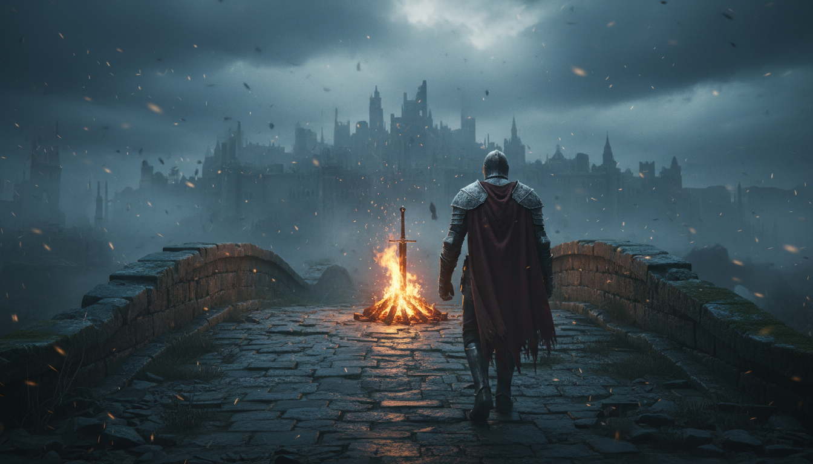

Un mundo que se cuenta con ruinas, silencio y fuego
Dark Souls I es una experiencia donde el escenario habla tanto como los personajes. Sus zonas no solo conectan entre sí: se entrelazan como un rompecabezas vertical que premia la curiosidad, la memoria y la atención al detalle. Cada atajo encontrado se siente como una victoria personal, porque reduce el miedo al camino y te devuelve control.
Lo que lo vuelve especial no es únicamente la dificultad, sino su forma de enseñarte: primero castiga, luego revela patrones, y al final te deja mejorar. Aprendes a leer animaciones, a administrar recursos, y a decidir cuándo avanzar y cuándo retirarte. Esa tensión constante transforma cada combate en un diálogo: tú observas, el enemigo responde, y poco a poco el caos se vuelve ritmo.
En este blog, comparto esta pasión por el género Soulslike desde una perspectiva de análisis: diseño de niveles, narrativa ambiental, combate metódico y el simbolismo de “volver a intentarlo” como parte del viaje.
